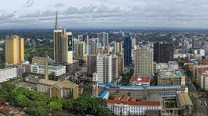

My Town
Nairobi

Nairobi originally was known as the place of "sweetwater"
People in the olden days used to migrate from one place to another looking for sources of fresh water
Since then Nairobi has become very industrialized and very densely populated
Reasons for Nairobis Industrialization and Dense population density
- Tourism- Kenya has been known for its wildlife and Nairobi is the only city that has a national park inside of it
- High Emplyment Rates- Many migrate from rural life to search for employment in Nairobi
- Nice Weather-Nairobi has been voted to have one of the best weathers in the world